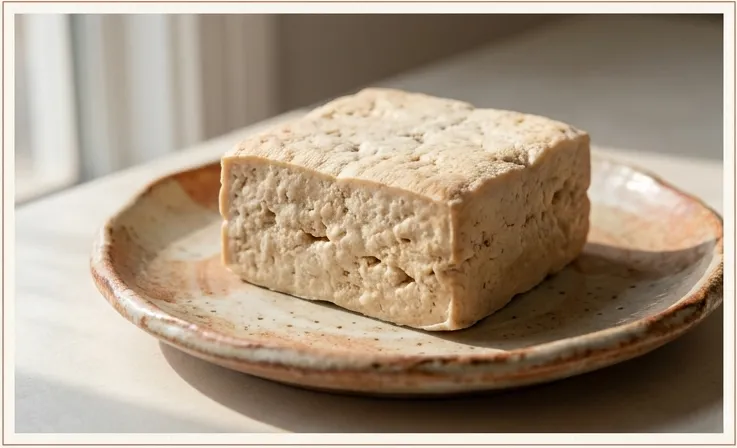
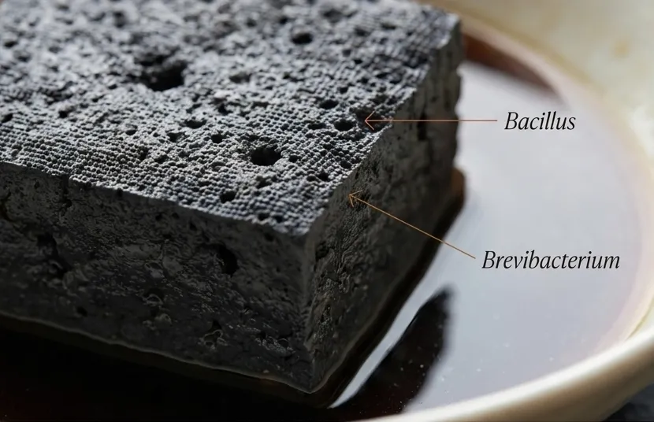

?
Next Chapter
Regional Ways to Eat It
Taiwan, Hunan, Nanjing, Sichuan: the sauces, the sides, and how each region made stinky tofu its own.
Stinky Tofu Guide
Start with the friendly overview, walk through the villain arc, or go full food-science mode.

Start Here
The friendly overview: what it is, why it smells, which rumors are wrong, and how to try it without running away.
Visual Story
A scrollable transformation from mild tofu to misunderstood icon: brine, fermentation, frying, and redemption.

Deep Dive
Fermentation chemistry, volatile sulfur compounds, the Maillard reaction, and why frying transforms the smell.
Next Chapter
Taiwan, Hunan, Nanjing, Sichuan: the sauces, the sides, and how each region made stinky tofu its own.